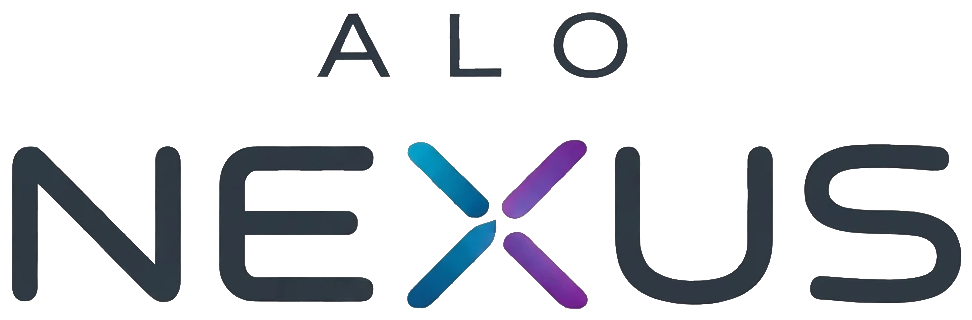
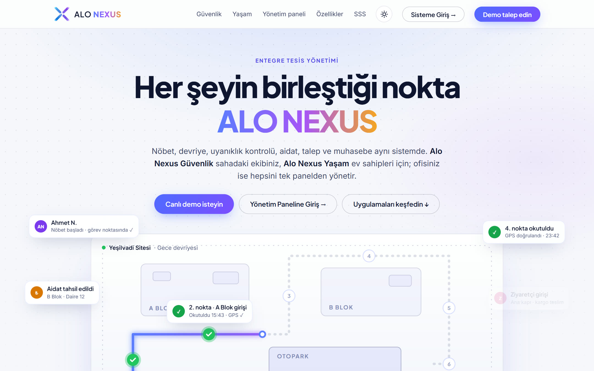
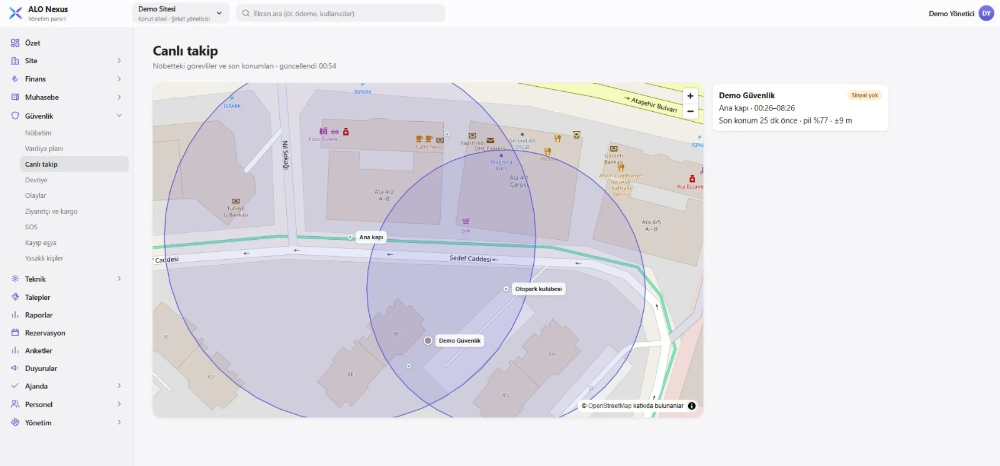
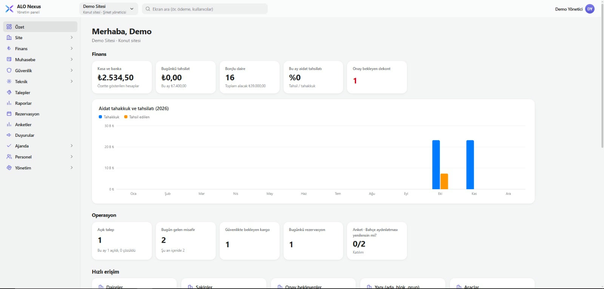

Alo Nexus
Site yönetimi ve güvenlik operasyonları için entegre platform
Nedir?
Alo Nexus, güvenlik görevlilerini, site sakinlerini ve yönetim ofisini tek bir sistemde buluşturuyor. Platform, ortak bir API, yönetici web paneli ve iOS ile Android'de çalışan mobil uygulamalardan oluşuyor.
Öne çıkanlar
- Canlı takip ve devriye: Nöbetteki görevliler harita üzerinde anlık izleniyor. Devriyeler QR kontrol noktaları, sıra ve konum (geofence) doğrulamasıyla yürütülüyor. Turlar otomatik olarak planlanıyor. İnternet olmadığında okutmalar cihazda bekletiliyor ve bağlantı gelince gönderiliyor.
- Finans: Aidat tahakkuku ve tahsilatı, borçlu daire takibi, dekont onayı, kasa ve banka özeti tek ekranda.
- Site yaşamı: Talepler, ziyaretçi ve kargo kayıtları, ortak alan rezervasyonu, anketler, hedefli duyurular ve push bildirimleri.
- Güvenlik: İzin tabanlı rol sistemi, KVKK kapsamında şifrelenen kişisel veriler ve şirketler arası veri izolasyonu.



Panel görüntüleri demo sitesinden alınmıştır.